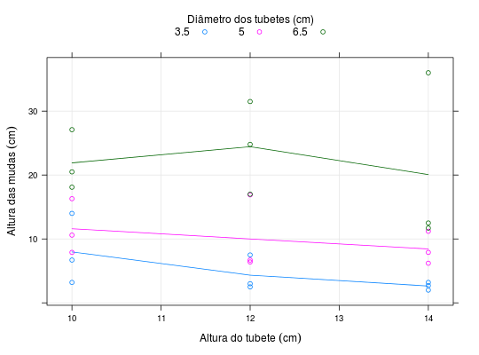

Experimento fatorial 3 \(\times\) 3 que avaliou o efeito das dimensões do tubete (diâmetro e altura, 3 níveis cada) na produção de mudas de eucalipto. O experimento foi instalado em delineamento de blocos casualizados e a resposta medida foi a altura das mudas 75 dias após a semeadura.
Um data.frame com 27 observações e 4 variáveis, em que
dtatblocoaltBANZATTO; KRONKA (2013), Quadro 7.3.1, pág. 177.
library(lattice) data(BanzattoQd7.3.1)#> Warning: data set ‘BanzattoQd7.3.1’ not foundstr(BanzattoQd7.3.1)#> 'data.frame': 27 obs. of 4 variables: #> $ dt : num 3.5 3.5 3.5 3.5 3.5 3.5 3.5 3.5 3.5 5 ... #> $ at : num 10 10 10 12 12 12 14 14 14 10 ... #> $ bloco: Factor w/ 3 levels "1","2","3": 1 2 3 1 2 3 1 2 3 1 ... #> $ alt : num 3.2 14 6.7 2.5 3 7.5 2 2.7 3.2 7.9 ...xtabs(~at + dt, data = BanzattoQd7.3.1)#> dt #> at 3.5 5 6.5 #> 10 3 3 3 #> 12 3 3 3 #> 14 3 3 3with(BanzattoQd7.3.1, addmargins(tapply(alt, list(at, dt), FUN = mean)))#> 3.5 5 6.5 Sum #> 10 7.966667 11.600000 21.90000 41.46667 #> 12 4.333333 10.000000 24.43333 38.76667 #> 14 2.633333 8.433333 20.06667 31.13333 #> Sum 14.933333 30.033333 66.40000 111.36667xyplot(alt ~ at, data = BanzattoQd7.3.1, groups = dt, type = c("p", "a", "g"), auto.key = list(title = "Diâmetro dos tubetes (cm)", cex.title = 1, columns = 3), xlab = expression("Altura do tubete"~(cm)), ylab = expression("Altura das mudas"~(cm)))